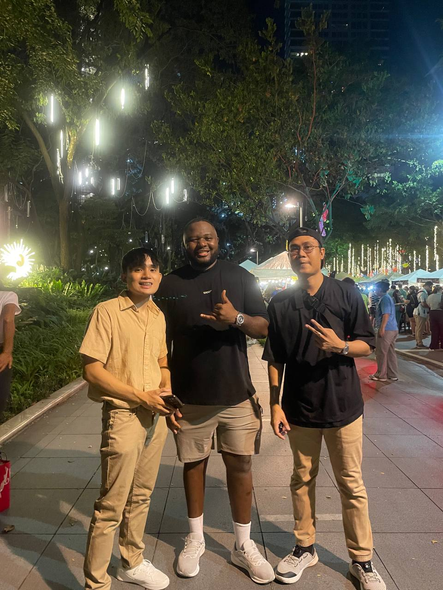

Revista de JogoPortuguês
Meu português aconteceu entre pessoas.
Do futebol às conversas que encontrei nas Filipinas.

A língua saiu do estudo e entrou na conversa.
Comecei ouvindo o Brasil pelo futebol. A rotina de estudo me deu palavras; falar com pessoas me deu ritmo, surpresa e vontade de continuar.
Nas Filipinas, o português passou a ter rostos e histórias. Conversar com brasileiros e angolanos ampliou aquilo que eu entendia como mundo lusófono.
Português sem ensaio
Conversas desta edição
Pratique português em poucos minutos
O Linguno reúne escuta, conjugação em frases, revisão de vocabulário, palavras cruzadas e consulta. Nas atividades que dependem da variedade, dá para separar português brasileiro e europeu.
Treinar no LingunoConversas longas para afinar o ouvido
Podcasts em português para acompanhar ritmo, interrupções, humor e vocabulário de esporte, mídia e cultura.
Uma revista de vozes em português
Cada faixa guarda seu próprio assunto. Crianças e animação têm uma seção separada, como devem ter.
Nível CEFR dos criadores
País ou variedade
Clássicos para ler sem pressa
Abra cada ficha para ver o nível sugerido, a nota de leitura e as edições públicas disponíveis.
O português que encontrei nas Filipinas
Comunidades e amizades que fizeram a língua deixar de ser apenas uma matéria de estudo.
Uma conversa com Calvin Castiel
Com Calvin, o português abriu espaço para Angola: outras gírias, outro ritmo e uma história lusófona vivida nas Filipinas.
Filipinhos: português entre as Filipinas e o Brasil
 Filipinas
Filipinas Brasil
Brasil
Uma comunidade de prática para filipinos, guiada pelo professor brasileiro Bruno Gomes e construída com conversas, encontros virtuais e referências locais.
Conhecer a comunidadeContinuo aprendendo cada vez que alguém responde.
Esta página é a minha revista de campo: um lugar para guardar vozes, encontros e recursos que mantêm o português vivo para mim.
Continuar comigo no YouTube